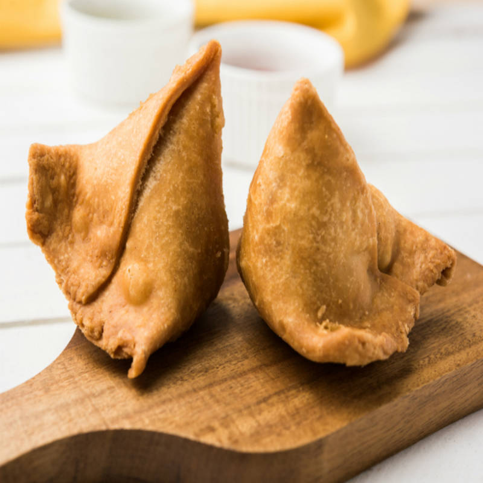
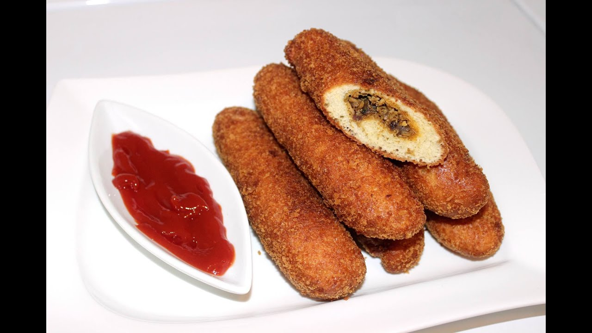

FISAT CANTEEN Snacks Samosa: Rs.10 A samosa is a fried or baked pastry with a savoury filling, such as spiced potatoes, onions, peas, cheese, meat or lentils.  Meat Rolls: Rs.10 Meat roll is a basic bread stuffed with cooked minced meat stew. 